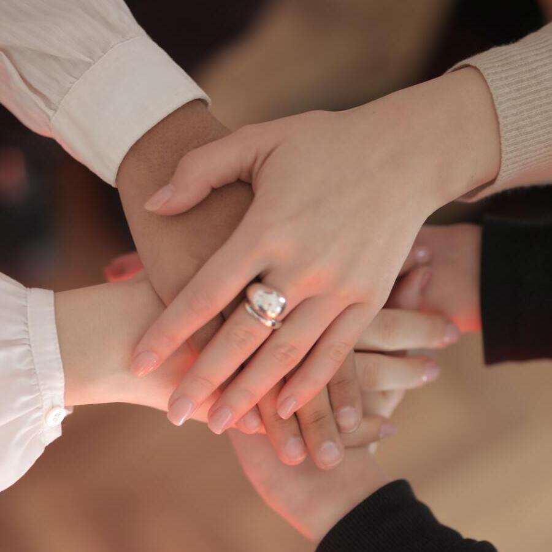
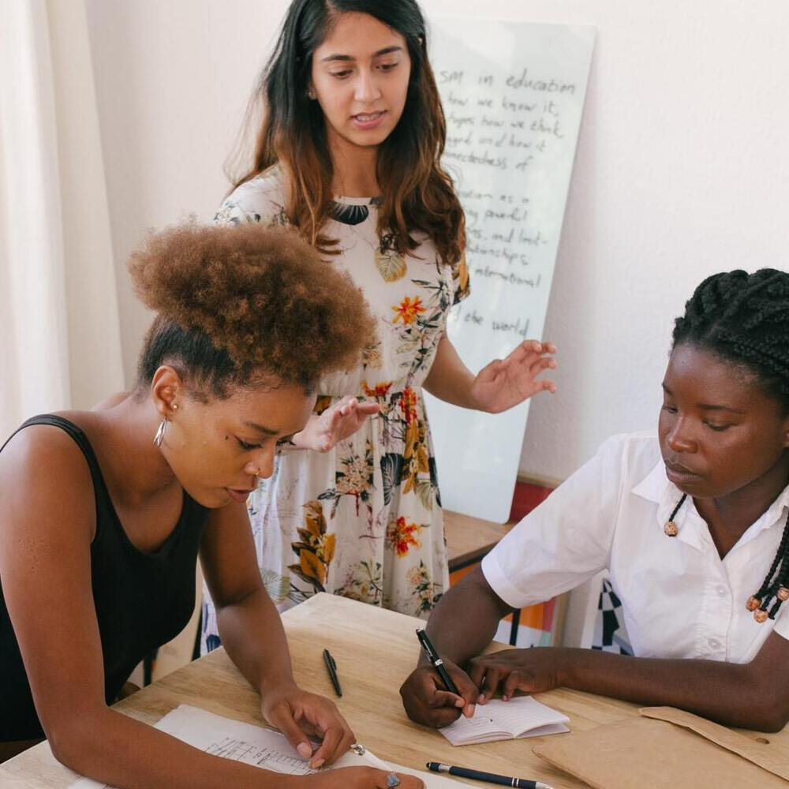

Get involved
Support
There are various ways you can support the museum.
Donations are very welcome and are an important way we keep this museum open and accessible to the whole community.
You can also support us by donating items of interest to the museum's collections.
If you have some item or collection that you think others would enjoy, please let us know by contacting our Collections Department and they will be able to assist you.
 Contact usVolunteer
A number of people volunteer their time and effort to keep the displays in good order and ready for visitors to come and enjoy.
Volunteering has its perks including getting to see behind the scenes of a working museum, access to staff-only lectures, and a monthly lunch where all staff and volunteers come together to discuss ideas for future exhibits and strategies for the museum.
You can help volunteer in a number of different spheres. Please contact us if you'd like to find out more about how you can get involved.
Contact usInternships
Are you interested in working in a museum?
Do you enjoy the fun and excitement of sharing the wonders of nature with people?
Well you could be just the right person to enjoy an internship at the museum.
You'll be learning from a number of different academics and people who are passionate about science and sharing it with the wider community.
 Contact us